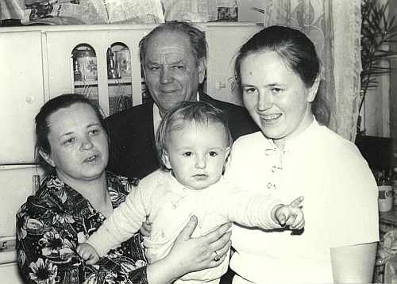

|
Высооцкий Вацлав Антонович
Родился 20.03.1917 в.г.Гродно. Трудился рабочим на Тонкосуконном комбинате в Гродно. Участник ВОВ. Имеет награды.
|
 вместе с женой Иреной (слева), дочерью Эльжбетой (справа) и внуком Владимиром
|
Родители:
- Антон;
- Анастасия Адмовна;
Братья/Сестры:
- Эдек (жена Ванда, сыновья: Веслав и Збышек, живут в Гданьске, Польша).
- Станислав (жена Мария, сын Ежи - живет в Коробчицах под Гродно, дочь Ирина - умерла).
- Ядвига (муж Казимир Глебович, сын Здислав).
- Чеслава (муж Ян, сын Юрий, дочь Наталья, живут в Гданьске, Польша).
Дети:
|